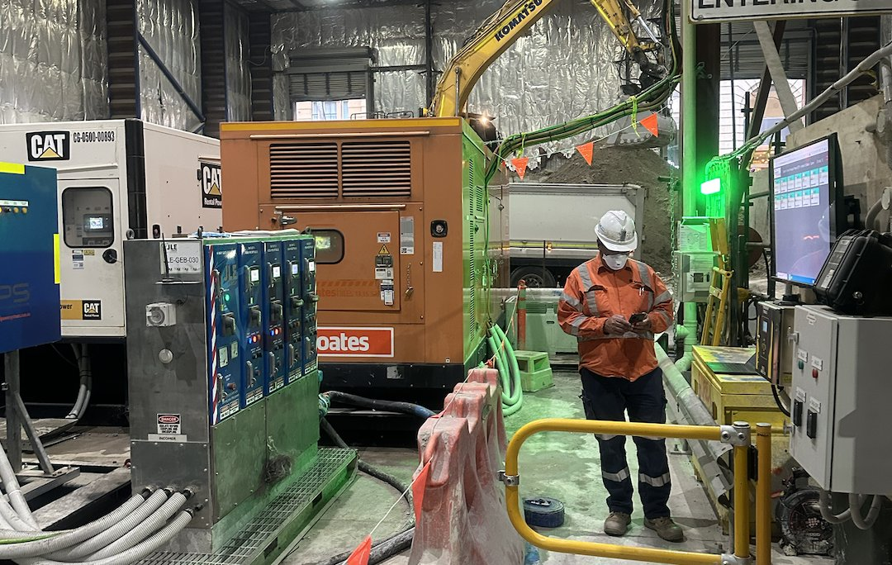
Production Intelligence
Production outcomes are influenced by far more than equipment utilisation alone.
Construction projects generate enormous volumes of information every day.
Production outcomes are influenced by far more than equipment utilisation alone
Production Intelligence helps organisations understand how these factors interact, identify opportunities for improvement and support better production decisions.
Workforce activity
Equipment performance
Operational constraints
Material movement
Environmental conditions
Production systems
Each contributes to performance
Production Starts Long Before Material Is Processed
Production outcomes are influenced by a chain of interconnected activities
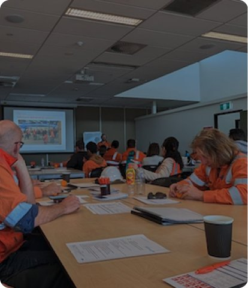
Planning
Execution
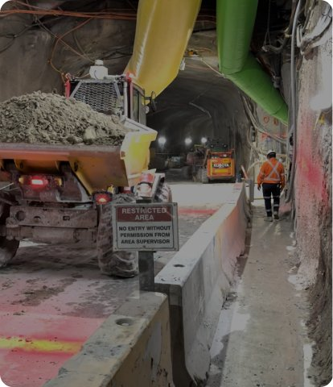
Material movement
Equipment performance
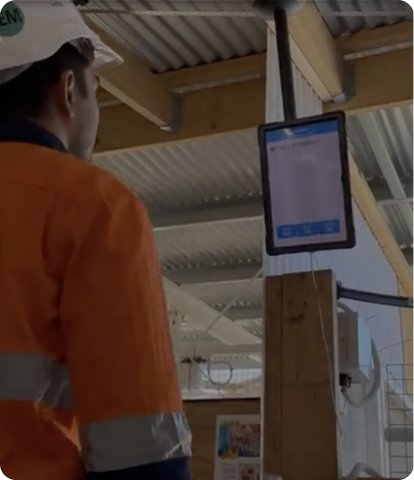
Workforce activity
Operational conditions
Production Intelligence helps organisations understand these relationships and identify opportunities for improvement.
Understanding the entire production chain
Every stage of the production process influences downstream performance.
Drilling
Blasting
Loading
Haulage
Processing
Material handling.
Operational constraints introduced at any stage can influence efficiency throughout the operation.
Production Intelligence helps organisations understand these interactions and identify where performance is being influenced.
From operational data to operational insight
Production systems generate enormous volumes of information
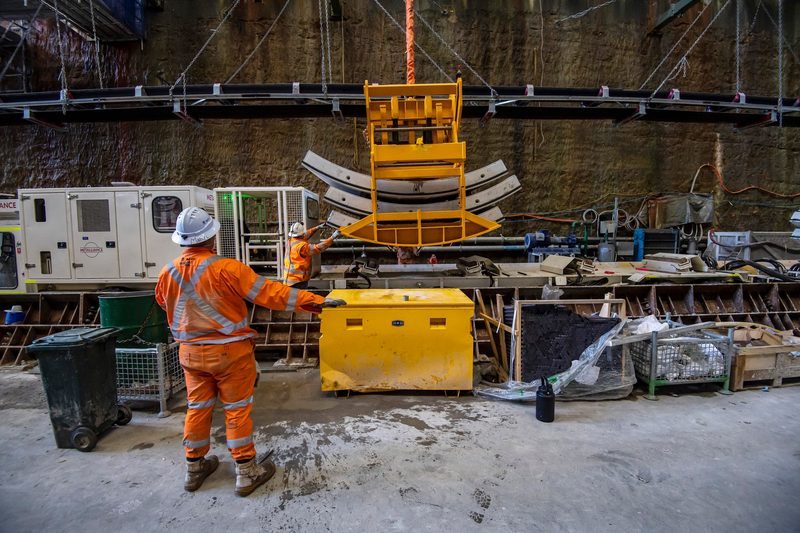
Equipment telemetry
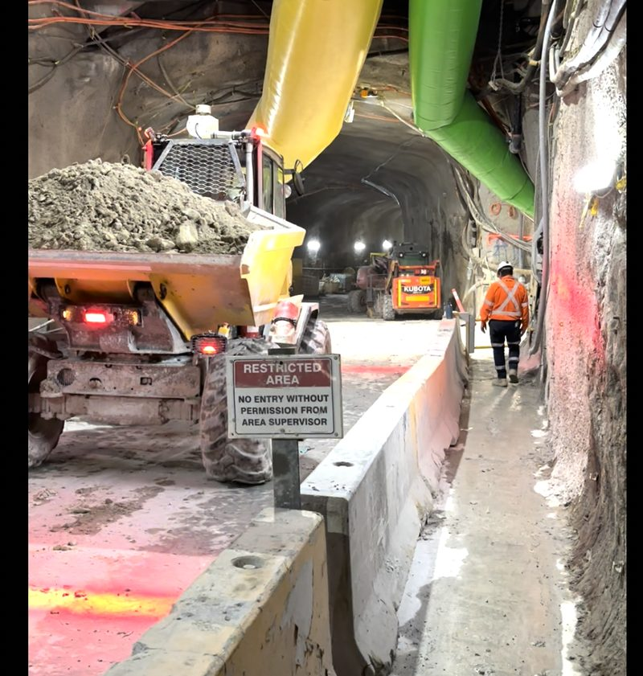
Material movement
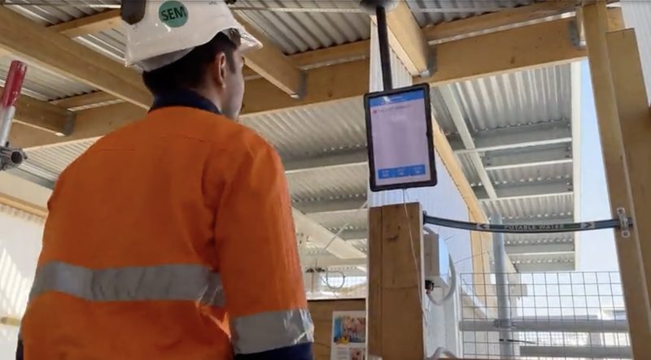
Production reporting

Workforce activity
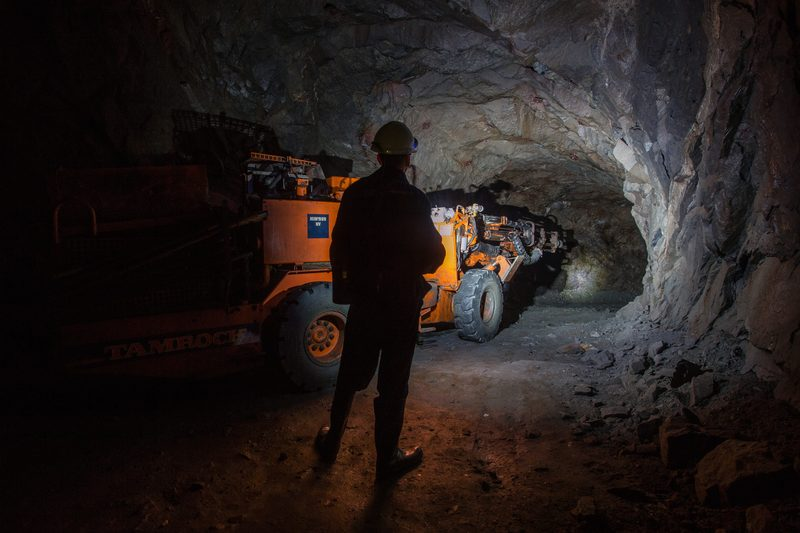
Environmental monitoring
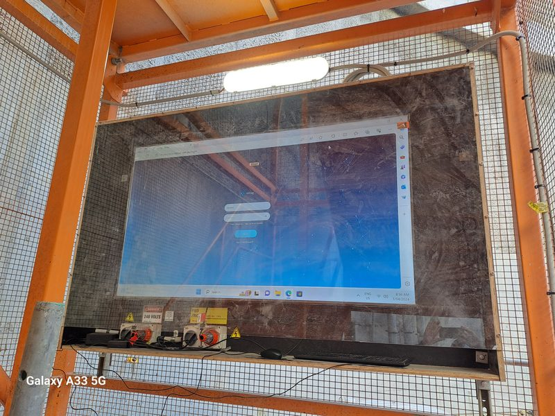
Operational events
The challenge is understanding how these factors influence production outcomes.
Production Intelligence continuously analyses production information across the operation, identifying relationships, constraints and emerging performance trends.
Rather than simply presenting metrics, the platform helps transform production information into operational understanding
Ai-powered performance insight
Production outcomes are rarely influenced by a single factor
Equipment availability may be affected by material quality
Material movement may be affected by workforce deployment.
Processing performance may be affected by upstream fragmentation outcomes.
Production Intelligence uses AI to analyse operational relationships and translate complex production information into simple, actionable narratives.
The platform helps organisations understand:
Example summary
Crusher throughput has reduced by 12% over the previous shift.
Review fragmentation outcomes and loading efficiency within affected production areas.
Visibility into the factors influencing performance
Every stage of the production process influences downstream performance
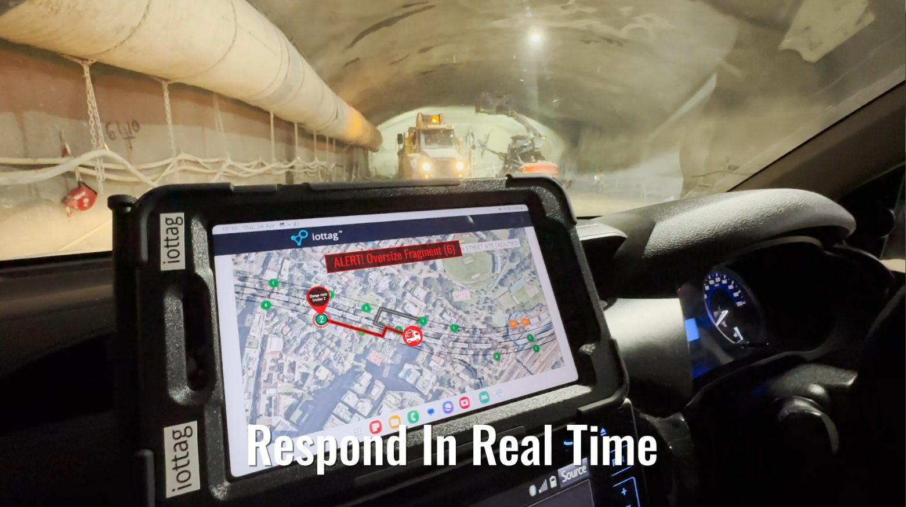
Understanding performance drivers creates opportunities to improve outcomes.
Rock fragmentation intelligence
Fragmentation quality influences every stage of downstream production.
Production Intelligence combines fragmentation analysis,
Operational data and performance outcomes to provide
a more complete understanding of production performance.
Identifying operational constraints earlier
Understanding these relationships earlier helps organisations improve responsiveness and support continuous improvement initiatives.
Production bottlenecks
Material flow constraints
Equipment utilisation issues
Operational dependencies
Production delays
Emerging performance risks
Production intelligence across the organisation
All supported through shared production understanding and performance insight.
Applications Included
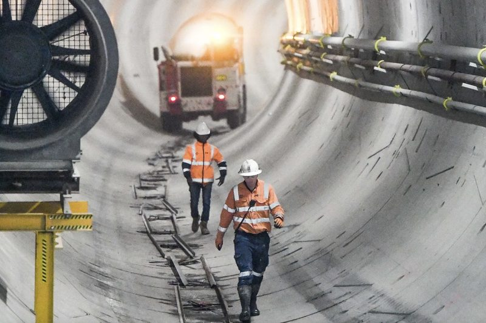
Operations Teams
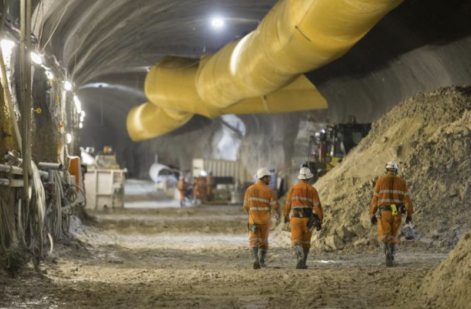
Incident coordination
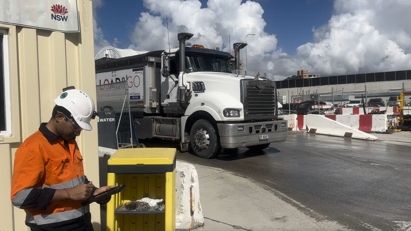
Vehicle coordination
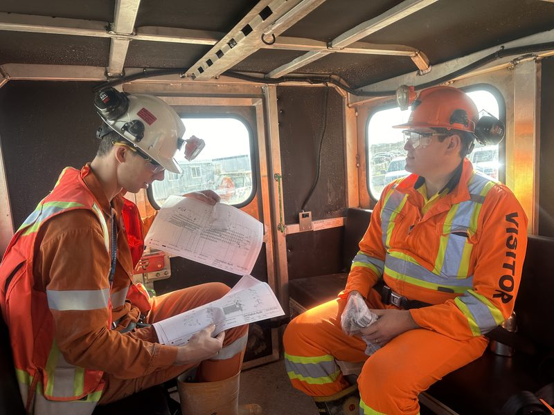
Personnel accountability
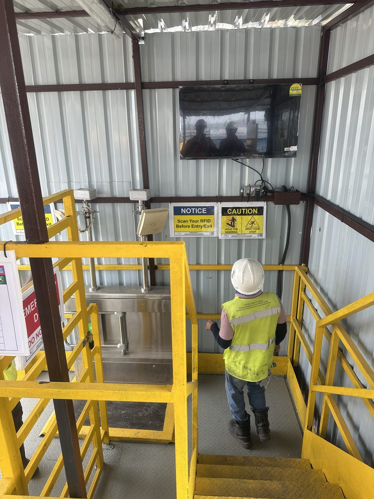
Evacuation management
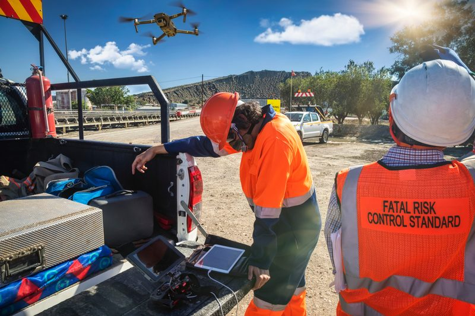
Operational communication
Production intelligence across the organisation

Operations Teams

Supervisors

Site Management

Corporate Leadership
All supported through shared production understanding and performance insight.
Part of the operational intelligence ecosystem
Many operations require multiple positioning technologies working together, for example: